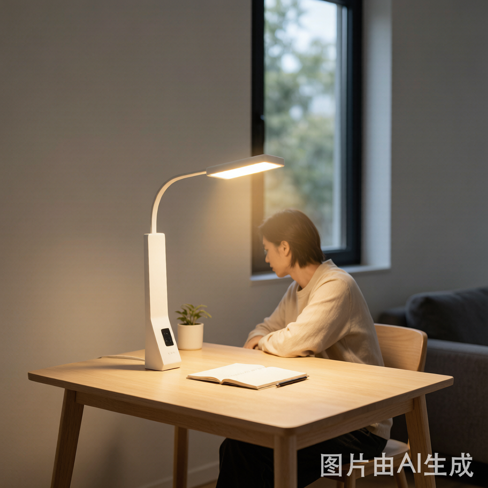

你的灯光，可能正在偷走你的眼睛健康
周末熬夜刷手机，第二天眼睛酸胀干涩——很多人会归咎于屏幕，但很少有人想到头顶那盏灯。
"换了智能灯之后，感觉眼睛反而比以前更累了。"
这不是个例。小红书上关于"智能灯眼睛不舒服"的讨论越来越多，知乎上也有大量工程师在质疑LED照明的光谱完整性。问题不是智能灯本身不好，而是绝大多数人根本没搞清楚"健康照明"的核心指标。
买灯的时候盯亮度、看功率，但影响眼睛健康的其实是三件事：蓝光溢出、频闪深度、色温节奏。这三项里，色温节奏是最容易被忽略、却对长期用眼健康影响最大的。
蓝光：不是所有蓝光都"有害"
先说最被炒作的概念——蓝光危害。
LED白光的基本原理是蓝光芯片激发黄色荧光粉，混合后呈现白色。这意味着所有LED白光灯都含有蓝光成分，区别在于含量多少和峰值波长在哪。
所谓"蓝光危害"，指的是波长415-455nm范围内的高能量短波蓝光，它穿透力强，能直达视网膜。但这里有个关键误区：
- 波长460-490nm的蓝光是人体节律调节必需的光——它告诉大脑"现在是白天"，抑制褪黑素分泌，保持清醒
- 波长415-455nm的高能蓝光才是需要限制的——过量照射会加速视网膜色素上皮细胞氧化损伤
所以真正要看的指标不是"有没有蓝光"，而是光谱中短波蓝光的比例是否过高。国标GB/T 20145-2026对蓝光安全分级做了明确划分：
- RG0（豁免级）：短波蓝光安全，无限制使用——这是选灯的基本门槛
- RG1（I级低风险）：有轻微蓝光溢出，不建议近距离长时间直视
- RG2（II级中等风险）：蓝光超标，不适合阅读和工作场景
选购底线：任何用于长时间阅读、工作、学习的灯，必须是RG0。 如果灯珠参数表里没有标注蓝光安全等级，大概率不达标。
频闪：看得见和看不见的两种伤害
频闪是另一个热门话题，但讨论往往停留在"看得见闪不闪"。
可见频闪（频率低于80Hz）：肉眼能感知闪烁，长时间暴露会导致视觉疲劳、偏头痛，严重者甚至诱发癫痫。这种频闪基本已被主流LED驱动芯片解决，低端产品仍有残留。
不可见频闪（频率80Hz-3kHz）：肉眼无法感知，但瞳孔和睫状肌会持续微调收缩，造成深层视觉疲劳。这才是大多数人"换了灯眼睛反而更累"的真正原因之一。
测试频闪的标准方法不是手机摄像头对灯拍照（那种方法极不准确），而是看频闪深度（Modulation Depth）和频闪频率指数（SVM）：
- IEEE推荐频闪深度 < 10% 用于一般照明，< 5% 用于阅读场景
- 欧盟新标准要求SVM < 0.4（2027年强制实施）
频闪的根因在驱动电源——恒流驱动芯片的纹波控制能力直接决定频闪水平。便宜的驱动用简单的RC滤波，纹波大、频闪深；好的驱动用主动PFC+低纹波恒流，频闪深度可以控制在1%以下。
这也是为什么NEXLAMP在驱动电源选型上始终坚持高品质恒流方案——不是成本问题，而是眼睛健康问题。
色温节奏：这才是健康照明的核心
如果说蓝光和频闪是"硬件指标"，色温节奏就是**"软件逻辑"**——它决定了灯光与人体生物钟的配合程度。
人眼的节律感受器（ipRGC）对不同色温的光有截然不同的响应：
| 时间段 | 自然光色温 | 对人体影响 | 智能灯应设色温 |
|---|---|---|---|
| 早晨 6-9点 | 4000-5000K | 帮助唤醒、抑制褪黑素 | 4000K（中性白） |
| 白天 9-17点 | 5500-6500K | 维持专注、高效工作 | 5000-5500K（日光白） |
| 傍晚 17-20点 | 3000-4000K | 开始放松、过渡 | 3000-3500K（暖白） |
| 夜间 20点后 | < 2700K | 促进褪黑素分泌、助眠 | 2700K以下（暖黄） |
大多数智能灯的问题：只会调亮度，不懂调色温。或者色温调节是手动触发的——需要你自己去APP里拉滑块。结果是：晚上10点还在4000K中性白下看书，眼睛被迫在高色温光线下持续工作，褪黑素分泌被抑制，睡眠质量下降，第二天眼睛更累。
健康照明的核心逻辑：灯光应该跟随自然节律自动调节，而不是让用户手动干预。这就是2026年行业说的"节律照明"——LED驱动电源不仅提供恒流，还要支持多通道独立调光（冷暖双色温独立控制），让色温过渡像自然光一样平滑。
2026年健康照明选购清单
把上面三个维度合在一起，一张表看清该怎么选：
| 指标 | 最低标准 | 推荐标准 | 说明 |
|---|---|---|---|
| 蓝光安全等级 | RG0 | RG0 | 必须是豁免级，阅读灯底线 |
| 频闪深度 | < 10% | < 5% | 低于5%才适合长时间阅读 |
| SVM | < 0.4 | < 0.2 | 欧盟2027强制标准，提前达标更好 |
| 色温范围 | 2700-5000K | 2700-6500K | 覆盖全天节律需求 |
| 节律调光 | 无 | 自动 | 跟随时间自动过渡色温 |
| 驱动电源 | 普通恒流 | 低纹波主动PFC | 频闪和色温平滑度的硬件基础 |
一个简单的判断方法：如果一款智能灯只宣传"亮度可调""APP控制"，但不提蓝光等级、频闪指标、色温自动调节——那它大概率在健康照明维度上是空白。
真正的健康照明灯，会在产品规格中明确标注RG0蓝光安全、频闪深度数值、节律调光模式——因为这些是技术实力的体现，不是营销噱头。
从"够亮就行"到"够好才行"
智能照明行业发展了十年，从"能联网就行"进化到"体验要好"。2026年的拐点是第三次进化——从体验好到健康好。
中国能效新标GB 30255—2026把待机能耗纳入监管，欧盟强制智能照明成为新建标配，背后都是同一个逻辑：灯光不再只是照明工具，它是影响健康的环境因素。
对你来说，选择标准很简单：
不只是亮度够不够，而是灯光是否对你的眼睛友好。
看蓝光等级、看频闪深度、看色温能不能自动跟着时间走——这三件事做到位的灯，才是真正值得买的健康照明。
本文由NEXLAMP技术团队撰写。NEXLAMP专注于高品质LED驱动与健康照明方案，为智能灯光提供低频闪、节律调光的硬件基础。